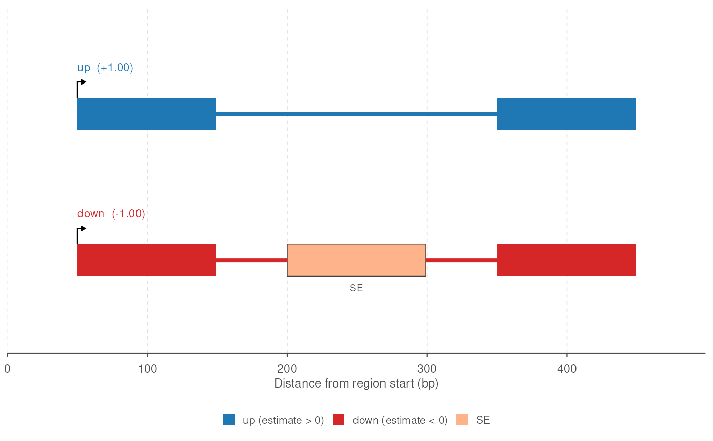

Draws one row per transcript appearing in tx_id or event_tx_id of
events. Transcripts are coloured by the sign of their estimate (blue when
positive, red when negative), and the exons called as events are filled by
event type, outlined, and labelled with the type. An exon called as several
types at once, e.g. an a5ss and an a3ss when both of its boundaries moved,
is filled with the first type and striped diagonally with the others. A
bent arrow over the first exon marks where each transcript starts and which
way it runs.
Usage
plot_transcripts(
events,
exons,
title = NULL,
up_color = "#1f77b4",
down_color = "#d62728",
event_colors = event_palette(),
unknown_color = "#999999",
rescale_introns = TRUE,
new_intron_length = 50,
flanking_length = c(50, 50),
transcript_label = TRUE,
label_events = TRUE,
label_size = 2.6,
legend = TRUE,
tx_annot = NULL,
stripe_multi_events = TRUE
)Arguments
- events
A GRanges returned by
find_all_events()or anyfind_*()function.- exons
A flat GRanges of exons with a
tx_idcolumn holding every transcript inevents, e.g. the preprocessed GRanges the events were found in.- title
Plot title. Default
NULL.- up_color, down_color
Colours for transcripts with a positive and a negative estimate.
- event_colors
Named vector mapping event type to fill colour. Default
event_palette().- unknown_color
Fill for event types absent from
event_colors.- rescale_introns
Whether gaps between exons are shortened to
new_intron_length. DefaultTRUE.- new_intron_length
Length (bp) of each gap after rescaling. Default
50.- flanking_length
Length (bp) of the region drawn before the first and after the last exon. Default
c(50, 50).- transcript_label
Whether to print the transcript id and estimate above each row. Default
TRUE.- label_events
Whether to print the event type below each event exon. Default
TRUE.- label_size
Size of the event labels. Default
2.6.- legend
Whether to draw the fill legend. Default
TRUE.- tx_annot
Optional character vector named by transcript id, appended to that transcript's label (e.g. novel status). Transcripts not named in it keep the plain label.
- stripe_multi_events
Whether an exon called as several event types is striped with the types its fill leaves out. Default
TRUE;FALSEfills it with the first type alone, and drops the others from the legend.
Details
All events passed in are drawn on one panel, so they must come from a
single gene; events from several genes are an error. Subset first, or use
plot_transcripts_by_gene() for one plot per gene and
plot_transcripts_by_pair() for one plot per transcript pair. A single
event, e.g. plot_transcripts(events[1], exons), draws its two transcripts.
A per-transcript value such as a fold change is drawn separately by
plot_transcript_lfc(). Given the same events, the two plots share
their row order and y limits, so they line up side by side.
Examples
# one gene: "down" has three exons, "up" skips the middle one
exons <- data.frame(
seqnames = "chr1",
start = c(1, 201, 401, 1, 401),
end = c(100, 300, 500, 100, 500),
strand = "+",
gene_id = "g1",
tx_id = c("down", "down", "down", "up", "up"),
exon_rank = c(1, 2, 3, 1, 2),
estimate = c(-1, -1, -1, 1, 1)
) |>
plyranges::as_granges() |>
preprocess(coef_col = "estimate")
events <- find_all_events(exons, verbose = FALSE)
if (requireNamespace("ggplot2", quietly = TRUE)) {
plot_transcripts(events, exons)
}
